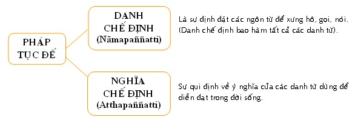

|
PHẬT GIÁO NGUYÊN THỦY THERAVÀDA VI DIỆU PHÁP BAN HOẰNG PHÁP |
|
BuddhaSasana Home Page |
Vietnamese, with Unicode VU Times or CN-Times font |
|
|
PHẬT GIÁO NGUYÊN THỦY THERAVÀDA VI DIỆU PHÁP BAN HOẰNG PHÁP |
|
Xin lưu ý: Cần có phông UnicodeViệt-Phạn VU Times hay CN-Times cài vào máy để đọc các chữ Pàli. |
|
BÀI 2.
PHÁP TỤC ÐẾ Tục đế có nghĩa là sự thật thông thường theo thế tình, sự thật của ngôn từ và ý nghĩa của ngôn từ. Như khi nói đến cái xe thì người ta hiểu rằng xe là một vật có bánh xe để di chuyển. Tiếng xe dùng để chỉ một vật gồm bánh xe, sườn xe ... hợp lại. Như vậy, xe là một sự định đặt ngôn từ để diễn đạt một vật chớ thật ra không có gì là chiếc xe cả. Tuy nhiên, gọi một vật có bánh để chạy là xe thì so với thông thường cũng không phải là sai, do đó mới có định nghĩa, Tục đế là những sự thật thông thường do thế tình đặt ra. Chữ Sammuttisacca còn được các dịch giã dịch bằng những danh từ khác nhau như sau: Chế định: ngôn
từ để chỉ định vật gì định đặt. Mặc dù được dịch với nhiều danh từ, nhưng tựu chung thì Tục đế là các ngôn từ được định đặt ra để diễn đạt các sự vật. Pháp Tục Ðế được chia ra làm hai loại:  - Danh chế định (Nāmapaññatti) lại được phân ra làm sáu loại: 1. Danh chơn chế định (Sāvijjamāna paññatti): là những danh từ chỉ vật thật có, bản thể chơn tướng, những danh từ dùng để diễn đạt pháp Chơn đế. Thí dụ: Tâm, Sở hữu tâm, Sắc pháp, Thọ, Tưởng, Hành, Thức, Uẩn, Xứ, Giới, Ðế ... 2. Phi danh chơn chế định (Avijjamāna paññatti): là những danh từ giả lập, không có bản thể, chơn tướng (giả định theo mặc ước). Những danh từ dùng để diễn đạt pháp Tục đế. Thí dụ: Chư thiên, Ma vương ... 3. Danh chơn, phi danh chơn chế định (Vijjāmāna avijjāmāna paññatti): là những danh từ ghép, chữ trước chỉ vật có thật (pháp Chơn đế), chữ sau chỉ vật theo qui ước (pháp Tục đế). Thí dụ: Tâm tôi, Tiếng radio, Mùi sầu riêng ... Tâm, tiếng, mùi là những danh từ chỉ vật có thật (chơn đế); tôi, radio, sầu riêng là những danh từ giả định (tục đế). 4. Phi danh chơn, danh chơn chế định (Avijjāmāna vijjāmāna paññatti): là những danh từ ghép, tiếng trước thuộc về ngôn từ giả định (pháp Tục đế), tiếng sau thuộc về những danh từ chỉ vật có thật (pháp Chơn đế). Thí dụ: Tôi sân, nó có tâm tham ... Tôi, nó là giả danh, không có thật; sân, tâm tham là những trạng thái có thật. 5. Danh chơn, danh chơn chế định (Vijjāmāna vijjāmāna paññatti): là những danh từ ghép, tiếng trước và tiếng sau đều chỉ những sự vật có thật. Thí dụ: Tâm Tham, Nhãn Thức, Thọ Lạc ... Tâm, Tham, Nhãn, Thức, Thọ, Lạc đều là những sự vật có thật (những danh từ dùng để diễn đạt pháp Chơn Ðế). 6. Phi danh chơn, phi danh chơn chế định (Avijjāmāna avijjāmāna paññatti): là những danh từ ghép, trong đó tiếng trước và tiếng sau đều chỉ những sự vật giả danh như nhơn loại, thiên hạ, trời đất, cha con, ông cháu, ... những danh từ đó diễn đạt những sự vật không có thật (chỉ là giả danh) theo pháp chơn đế mặc dù đối với pháp tục đế chúng hoàn toàn có thật. - Nghĩa chế định (Atthapaññatti) gồm có bảy loại như sau: 1. Hình thức chế định (Santhānā paññatti): là những danh từ dùng để diễn đạt hình dáng của sự vật như núi cao, biển rộng, hố sâu, sông dài, bàn tròn, người lanh lẹ, .... 2. Hiệp thành chế định (Samūha paññatti): những danh từ chỉ các sự vật hiện hữu bởi sự tập hợp của nhiều vật khác nhau như nhà (sự kết hợp bởi rui, mè, kèo, cột ...), xe (sự kết hợp bởi sườn, bánh, tay lái, ...), gia đình (sự kết hợp bởi cha, mẹ, con cái ...). 3. Chúng sinh chế định (Satta paññatti): là những danh từ dùng để chỉ những sinh vật có thức tánh, mạng căn như người, trời, tiên, Phật, ... 4. Phương hướng chế định (Disā paññatti): là những danh từ dùng để diễn đạt về phương hướng như Ðông, Tây, Nam, Bắc, ... 5. Thời gian chế định (Kāla paññatti): là những danh từ dùng để chỉ một thời điễm nào đó như buổi sáng, buổi tối, Xuân, Hạ, Thu, Ðông, ... 6. Hư không chế định (Ākāsa paññatti): là những danh từ dùng để diễn tả những chỗ trống, kẻ hở, hư không như hang, hố, huyệt, ao, đầm, .. 7. Hình tướng chế định (Nimitta paññatti): cũng gọi là Tiêu Biểu chế định, là những danh từ diễn đạt một sự vật tiêu biểu, tượng trưng như lá cờ, quốc gia, bảng hiệu, ... hay các đề mục tu Chỉ Tịnh như Ðất, Nước, Lửa, Gió, xanh, vàng, ... Không nên lầm tưởng là cứ mỗi danh từ trong danh chế định sẽ có một danh từ tương đương trong nghĩa chế định, mà phải hiểu rõ rằng các danh từ giả định trong danh chế định diễn tả một sự vật có thật dù cụ thể hay trừu tượng. Còn nghĩa chế định là những danh từ chỉ nhằm vào mặt ý nghĩa, hay nếu đi chung với danh chế định thì nhằm bổ túc thêm ý nghĩa của danh chế định đó. Thí dụ: cái nhà trên phương diện danh chế định thì nó thuộc về Phi Danh Chơn chế định, nhưng theo nghĩa chế định thì nó là Hiệp Thành chế định. Tóm lại, mọi vật trong đời được diễn đạt bằng ngôn ngữ, để bày tỏ cho nhau được hiểu biết, bất cứ dưới hình thức nào, phương tiện nào đều là chế định. Ngay khi Ðức Phật thuyết pháp để chuyểân mê, khai ngộ, Ngài cũng phải dùng pháp chế định của Tục Ðế để diễn đạt Chơn Ðế. Vì thế chúng ta cần phải biết rõ thế nào là Chơn Ðế và thế nào là Tục Ðế để khỏi lầm lẩn trong việc tu tập. -ooOoo-
Ðầu trang |
Mục lục
| 01
| 02
| 03
| 04
| 05
| 06
| 07
| 08
| 09 |
Chân thành cám ơn Bác sĩ Nguyễn Tối Thiện đã gửi tặng bản vi tính (Bình Anson, 10-2002).
[Trở
về trang Thư Mục]
updated: 24-08-2003